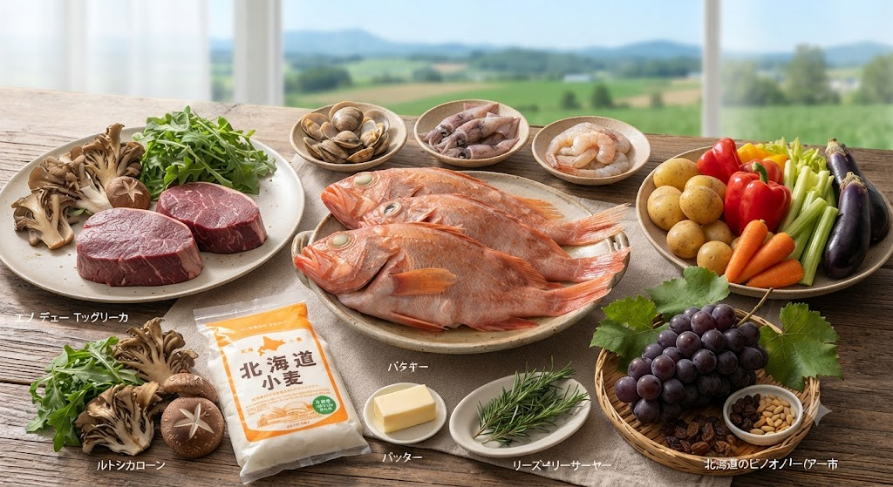
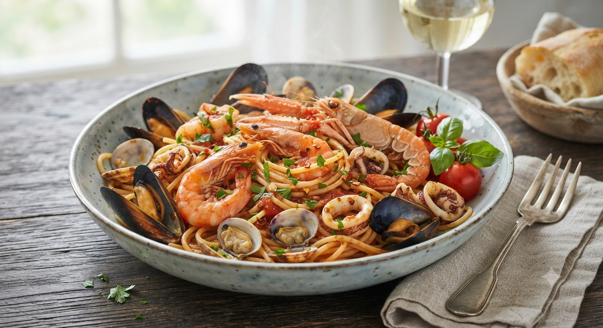

「納得できる食材しか使わない」
シェフ塚川が贈る、道産食材の究極イタリアン
大切な記念日なのに、どこも似たような料理ばかり…
本格的な味が食べたいけど、堅苦しい雰囲気は苦手。
「北海道産」と書いてあるけど、本当に美味しいものなの？
シェフが自ら生産者を訪ね歩き、納得したものだけで作る「本物の北海道イタリアン」。

野菜、肉、魚介。シェフ塚川は自ら生産者のもとへ足を運び、その情熱を確認します。納得できない食材は、例え人気メニューであってもお出ししません。北海道の土と海が育んだ「真の旬」をお愉しみください。

30歳で渡ったイタリア。約2年間の修行で身につけたのは、単なるレシピではなく「素材を活かす呼吸」です。その伝統技法と北海道の最高級食材が融合し、ここでしか味わえない「北海道イタリアン」が誕生します。
「ちょっとしたお祝いで利用。ドルチェのサプライズ, 本当に大満足でした。」
— 札幌市 40代 女性
「ランチメニューにない鹿肉を快く提供してくれました。その心意気に感動しました。」
— 出張で来道 30代 男性
「ベビーカーOKなのが本当に嬉しい。ウニのパスタは絶品。お肉もあっさりいただけます。」
— 札幌市 30代 ママ
「店を出る時, シェフが厨房から挨拶してくれて温かい気持ちになりました。」
— 定期的に利用 50代 男性
「もっと身近に、もっと特別に。」
お客様のお声から生まれる、トラットリア テルツィーナの新しい挑戦。
大人気の「看板ラザーニャ」や旬の道産パスタソースを、できたての美味しさのまま急速冷凍。ご自宅で温めるだけでレストランクオリティをお愉しみいただけます。
家庭で再現できるプロの隠し味や、北海道ワインとのペアリング術を学べる会員制オンラインレッスン。会員限定のマニアックなワイン頒布会も企画中。
新サービスの開始時期や限定案内は、公式Webサイト・Facebook等にて順次公開いたします。どうぞご期待ください。
Location
〒060-0061
札幌市中央区南1条西6丁目 第27栄和ビル 2F
Reservation
011-221-3314
Hours
Lunch 11:30〜15:00 / Dinner 17:30〜22:00
Train
大通駅 徒歩5分 / 西4丁目駅 徒歩4分